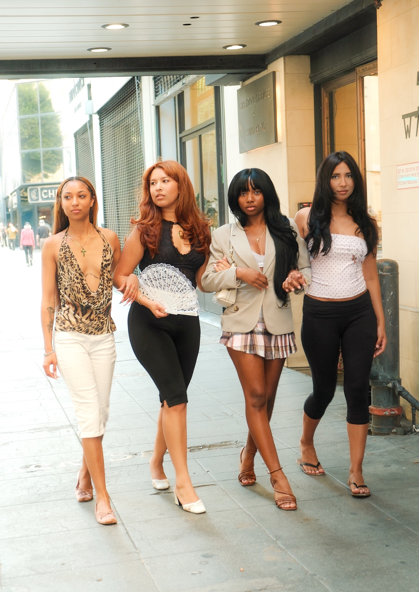

Off Duty Look

The "Model Off Duty" look is the ultimate fashion optical illusion, convincing us that an outfit is completely lazy and thrown together, when it’s actually highly calculated. The phrase itself traces back to the late 1990s and early 2000s, born right on the city pavement. As supermodels like Kate Moss and Naomi Campbell transformed into full blown pop culture celebrities, paparazzi and early street style bloggers started staking out the exits of fashion week venues. They caught these girls sprinting between luxury runway shows, still wearing dramatic runway makeup, but hastily thrown into their own casual, raw clothes usually oversized layers, heavy leather, and comfortable flats. It was the birth of a new fashion subgenre where the sidewalk became just as influential as the catwalk.
Today, a new generation of supermodels has taken over the streets, each bringing a totally different energy to the pavement. You have Bella Hadid, who practically invented the quirky, vintage "weird girl" look by mixing archive pieces with chunky sneakers. Right next to her is Anok Yai, who is all about bold and high fashion; she'll casually pair low slung sweatpants with a massive, textured fur coat or a customized Birkin.
Meanwhile, Kendall Jenner and Hailey Bieber are the queens of structured, clean minimalism, turning basic oversized trench coats, simple denim, and leather blazers into instant viral Pinterest boards. These girls aren't just wearing clothes between gigs; they’re setting the trends we all end up buying.
What makes this aesthetic so incredibly cool is the art of contrast. Instead of looking perfectly manicured or overly polished, it thrives on a gritty, downtown energy that feels totally raw and authentic. The real magic comes from that rebellious, individualistic spirit mastering a high low mix where your most basic closet staples effortlessly collide with sharp, elevated tailoring. It’s an outfit that feels entirely unbothered, commanding the room without ever needing to flash a single luxury logo.
We love this look so much because it feels entirely achievable and human. While high-fashion runways can feel like untouchable fantasy, the off duty look is practical and grounded in everyday pieces anyone can find. It breaks down the barrier between a global celebrity and the rest of us, giving everyone permission to prioritize ultimate comfort without sacrificing an ounce of style. In a world that often demands perfection, we are obsessed with an aesthetic that proves the coolest thing you can wear is an outfit that looks like you didn't try hard at all.